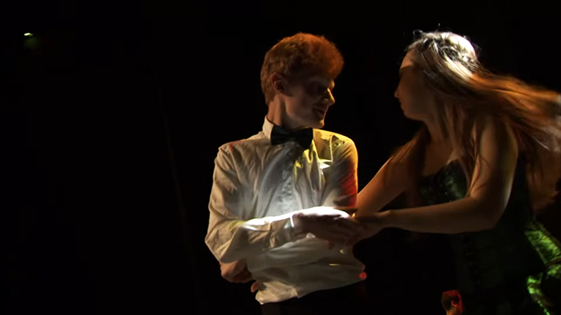

Attention! La vente de places pour le spectacle sera cloturée le Jeudi 2 Février 2017
Assister au spectacle, c’est l’occasion de découvrir les talents qui s’expriment au travers des différentes associations culturelles créées par les élèves de l’École des Mines. Que ce soit par l’humour décapant des élèves de 3ème année lors de la fameuse « Revue 3A » ou en découvrant les multiples volte-face des danseurs Rock, le spectacle révèlera bien des facettes du Mineur Stéphanois !
